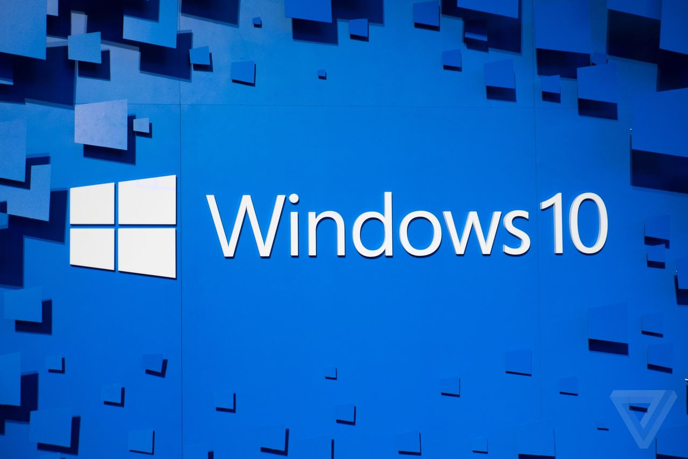

De recentste versie van Windows gericht op consumenten en bedrijven is Windows 10 November Update, vrijgegeven op 12 november 2015, voor de servermarkt is Windows Server 2012 R2 Update de meest recente versie sinds 8 april 2014. Windows Server 2016 moet later uitkomen als server-variant van Windows 10 in het begin van 2016. De meest recente versie voor smartphones is Windows 10 Mobile versie 10.0.10586, vrijgegeven op 20 november 2015. Voor de Xbox One is dit de "New Xbox One Experience"-update, versie 10.0.10586.

Windows 10 voor desktops en tablets werd uitgebracht op 29 juli 2015 met versie 1507. Windows biedt er ondersteuning voor meerdere bureaubladen, er kwam een notificatiecentrum, een nieuw startmenu, Modern UI-apps kunnen in de bureaubladversie geopend worden en er kwam een vervangende interface voor de Charms-bar. Windows 10 is de opvolger van zowel Windows 8.1 als Windows Phone 8.1, Windows Embedded en Xbox One OS. De Technical Preview van Windows 10 werd vrijgegeven op 1 oktober 2014 en gevolgd door 13 opvolgende previews voordat de eerste stabiele build 10240 werd vrijgegeven. Windows 10 introduceert verschillende nieuwe functies zoals Microsoft Edge, Windows Hello, DirectX 12, Xbox One-streaming, het Actiecentrum, TaskView, Continuum en Microsoft Cortana. Op 12 november 2015 bracht Microsoft versie 10.0.10586 uit van Windows 10 als update voor bestaande gebruikers van Windows 7, 8, 8.1 en 10 .